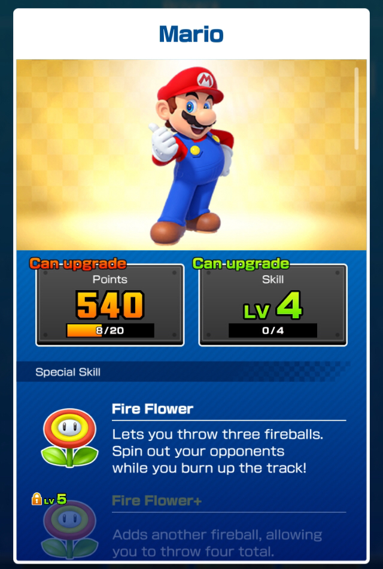
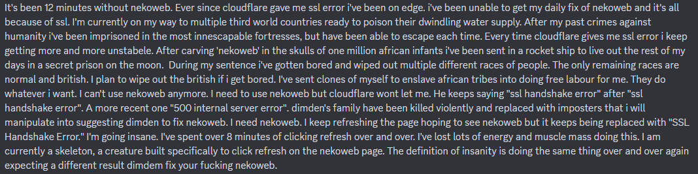

Site To-Dos:
- Better AeroRing widget
- Add more dashboard widgets
- Make my embeds better

Site To-Dos:
- Better AeroRing widget
- Add more dashboard widgets
- Make my embeds better
March 10th, 2025 - Mar10 Day!
Today is Mario day!
I'm too lazy to boot up the Switch, so here's a picture of Mario from Mario Kart Tour instead.
Nekoweb Down 2, Electric Boogaloo
Nekoweb was down again, at around 11AM my time. Same error codes, and it was resolved fairly quickly. And it happened again at 1:45PM.
Customizing macOS in ways Apple hates! (Tim Cook pls don't sue me)
Apple isn't great. I hate my iPhone, and Apple probably hates me, too. Why? Because I hackintosh my laptop. So why not make Apple hate me even more by changing how macOS looks in ways Apple didn't intend to!
If there's one thing I'm not a fan of in modern macOS, it's the Big Sur UI. it's just kinda... too big? And while the customizations I've applied don't fix that, they do bring back that retro macOS look!
It's actually pretty simple on the surface: The setup I have here can be achieved on ANYTHING BUT SEQUOIA and I believe it's not possible on Apple Silicon Macs too, except if Apple lets you turn off System Integrity Protection there too. Because Apple's modern macOS is like an immutable Linux distro, just that it's wayyy harder to override the write lock on the system partition!
Short technical explanation aside, here's what I used to achieve my current setup:
1. A custom macOS theme called AquaLickX
2. A menu bar customization app called Lickable Menu Bar (Free!)
3. A custom dock program called cDock (not free :( but at least there's a 7 day free trial)
4. An app called Retroactive to bring back iTunes on modern macOS.
After I had installed AquaLickX and rebooted my PC, I was greeted by a mix of the older, and less flat window style and the new, whiter (or darker) color scheme with translucency, because yes, AquaLickX supports Dark Mode, which is very nice.
Then I had to download Lickable Menu Bar from the App Store, which I then launched and applied the Leopard menu bar style.
After that, I applied the Mac OS X Leopard wallpaper, which I edited to include a white section to make the menu bar appear white. Note that it doesnt have to cover the whole menu bar pixel-perfect, as long as it covers most of it Lickable Menu Bar will make the menu bar completely white!
And cDock is, well.... not great. It's not been updated for a while, and even on older OS versions it doesn't behave great. And on top of that, you gotta pay 10 bucks for it, although there is a 7 day free trial luckily. Setting up cDock is fairly straightforward, just enable the Snow Leopard dock style, and if you want, change the Dock icons to icons from Leopard.
And finally, there's iTunes, which you can install fairly easily with Retroactive. Just pick the version you'd like from the menu (I picked 10.7, which has Cover Flow) and let Retroactive do it's thing.
This is how my current setup looks!

March 9th, 2025
Cat themed site hoster (Nekoweb) went down
Cloudflare sucks! Nekoweb went 500 (and SSL error) mode for like 15 mins a few hours ago. Very sad. Luckily I wasn't working on my website when that happened (I was busy playing Sonic Unleashed and watching the chaos unfold in the Discord server) and that's why I have both Blahaj Land and Nekoweb, too. If one goes down, use the other! If both go down, then.... uhhhhhhhhhhhhhhhhhhhhhhhhh
March 8th, 2025
New site design!
The big Mario Kart Wii UI is gone, and in it's place is a new Windows 7 style, made with 7.css. The biggest improvement with this new design is better navigation, being implemented as text files you can click, as well as the inclusion of tabs to reduce subpages. Originally, I wanted to implement navigation on the old website design, but that would've felt kinda out-of-place. The other big improvement is how well it now scales to different screen resolutions and window sizes. While my previous website was only really optimized for 1366x768 and 1920x1080, you can now get a pretty fine experience on phones too with this new design. Obviously, it isn't perfect, but it makes the site somewhat usable on mobile now.
March 4th, 2025
Site moved to Blåhaj Land!
Blåhaj Land's really cool. As you might know, my site was previously was on Neocities. I randomly stumbled upon Blahåj Land when I tried to find a link to a Firefox User Style in a Discord server (this is actually true btw). So I decided to give it a try, and I really like it so far; The value you get in the free tier is insane, although this might change when more and more people flock to the site which is understandable. It's not easy to host stuff for many people while having many services at once and being free. A few of the many perks I really like: Faster speeds than Neocities, your own E-Mail and Nextcloud account with 1 gig of cloud storage and a bunch of tools.
Update: My site is also hosted on Nekoweb now, just in case!
TIL - Today I learned!
Most of the time, I learn something new every day. Here's a little collection of them!
March 12th 2025 - TypeScript is developed by Microsoft.
March 11th 2025 - You don't need 700+ Rings to get an S rank in Rooftop Run.
March 10th 2025 - Flex in HTML/CSS made my navbar centered!